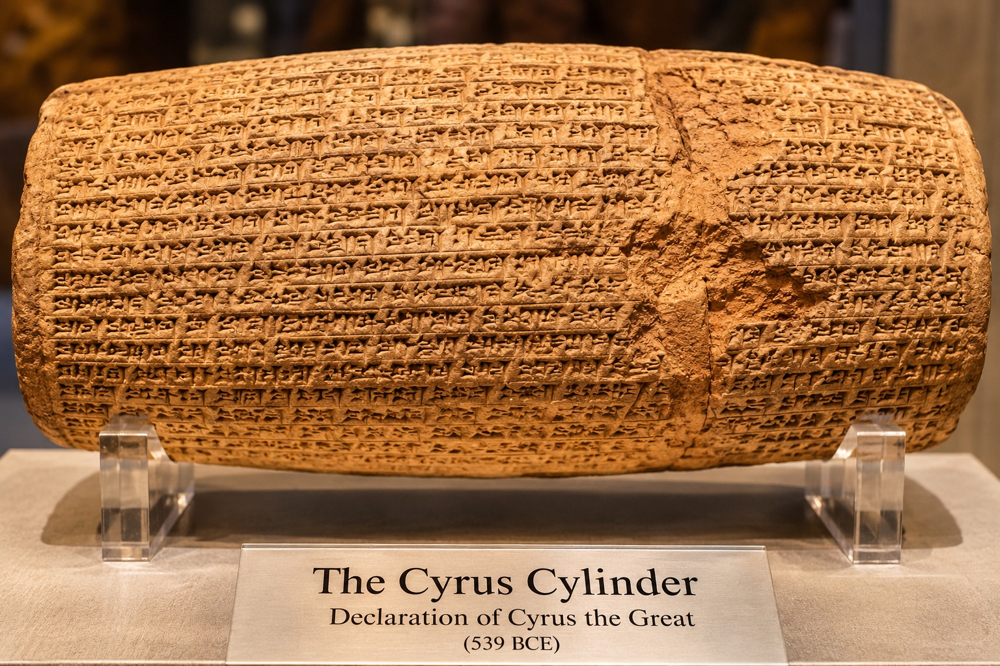

👑
מי?
כורש, מלך פרס, והעם היהודי שגלה לבבל.
הדגם שלי מציג את בית המקדש השני אחרי הצהרת כורש

גליל כורש (539 לפנה״ס): כתובת חרס עתיקה בכתב יתדות המתעדת את הצהרת כורש הגדול ואת מדיניותו לאפשר לעמים לשוב לארצם ולבנות את מקדשיהם.
כורש, מלך פרס, והעם היהודי שגלה לבבל.
כורש פרסם הצהרה שאפשרה ליהודים לשוב לארצם ולבנות מחדש את בית המקדש בירושלים.
בשנת 538 לפני הספירה, לאחר כיבוש בבל בידי כורש.
ההצהרה ניתנה במסגרת שלטונו של כורש בבבל, ואפשרה ליהודים לשוב לירושלים.
כורש רצה לחזק את שלטונו באמצעות מתן חופש דתי לעמים שכבש, ולאפשר להם לשקם את מקדשיהם.
הצהרת כורש אפשרה ליהודים לחזור לארץ ישראל מגלות בבל ולהתחיל בבניית בית המקדש השני.